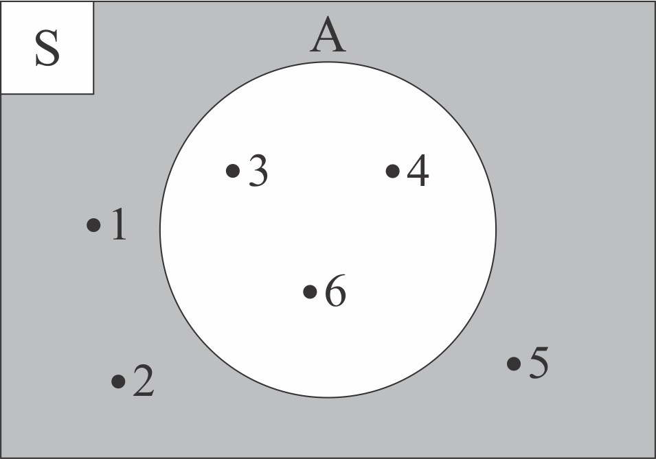

3.4 KOMPLEMEN HIMPUNAN
Kemudian, bagaimana diagram venn dari komplemen himpunan? Perhatikanlah Tabel 3.4.2 di bawah ini!
| Himpunan | Diagram Venn |
|---|---|
|
S = {1, 2, 3, 4, 5, 6} dan A = {3, 4, 6} Komplemen dari himpunan A merupakan anggota himpunan semesta yang bukan anggota himpunan A Sehingga, A' = {1, 2, 5} atau Ac = {1, 2, 5} |
 |
| Area di luar lingkaran himpunan A diarsir untuk menandai bawah area tersebut merupakan komplemen dari himpunan A. | |
Untuk lebih lengkapnya mengenai proses menggambar diagram venn dari komplemen himpunan, perhatikanlah animasi interaktif di bawah ini!
 Petunjuk (klik untuk menyembunyikan petunjuk)
Petunjuk (klik untuk menyembunyikan petunjuk)- Tekan icon
 . Jika animasi belum muncul, harap tunggu sebentar ya 😄
. Jika animasi belum muncul, harap tunggu sebentar ya 😄 - Tekan tombol "Mulai" pada layar animasi interaktif untuk memulai. Perhatikanlah setiap arahan yang ditampilkan
- Praktikanlah juga pada buku catatanmu 😄

*catatlah ke dalam buku catatanmu 😄
Notasi pembentuk himpunan dari komplemen himpunan A adalah A' = {x | x ∈ S dan x ∉ A} yang artinya x merupakan anggota himpunan semesta dan x bukan anggota himpunan A.